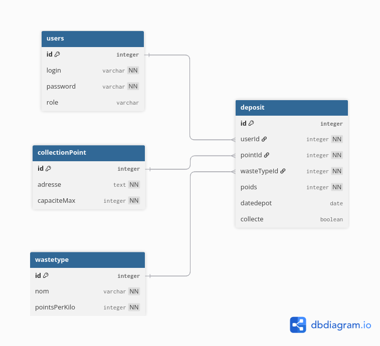

♻️ EcoDrop — API REST
SAE 2.01 · BUT Informatique 2ᵉ année · Université de Lille · Mars 2026
Présentation
EcoDrop est une API REST complète modélisant un système de gestion écologique de déchets. Les utilisateurs peuvent enregistrer des dépôts de déchets dans des points de collecte et gagner des points en fonction du type et du poids des déchets déposés. Le système inclut un leaderboard, un contrôle d'accès par rôles et des alertes de surcharge automatiques.
Authentification
Token Base64 avec gestion des rôles USER / ADMIN
CRUD complet
4 ressources : déchets, points de collecte, dépôts, utilisateurs
Leaderboard
Classement par score pondéré (poids × points par kilo)
Alertes surcharge
Détection automatique des points remplis à plus de 80%
Architecture technique
Le projet suit une architecture en couches stricte, assurant une séparation claire des responsabilités :
Client HTTP
Bruno / curl / frontend
Authentification
authent.java · VerifToken.java — Génération et vérification des tokens Base64
Contrôleurs REST (Servlets)
DepositAPI · DechetRestAPI · CollectionPointRestAPI · UsersAPI
Couche DAO
DepositDAO · DechetDAO · CollectionPointDAO · UsersDAO
DataSource JDBC
DS.java — Connexion poolée vers la base de données
PostgreSQL
4 tables : users · wastetype · collectionpoint · deposit
Modèle de données
Le schéma relationnel est composé de 4 tables reliées par des clés étrangères. La table deposit fait le lien entre les utilisateurs, les types de déchets et les points de collecte.

users
Comptes utilisateurs avec login, password et rôle (USER/ADMIN)
wastetype
Types de déchets avec nom et points par kilo
collectionpoint
Points de collecte avec adresse et capacité maximale
deposit
Dépôts effectués : liaison utilisateur × déchet × point, poids et date
Endpoints de l'API
Contexte : /context_ecodrop
Authentification
| Méthode | Endpoint | Auth | Description |
|---|---|---|---|
| GET | /auth/token?login=X&password=Y | Non | Génère un token Base64 |
Déchets
| Méthode | Endpoint | Auth | Description |
|---|---|---|---|
| GET | /dechets/ | Non | Liste tous les types de déchets |
| GET | /dechets/{id} | Non | Récupère un déchet par ID |
| POST | /dechets/ | User | Crée un nouveau type de déchet |
| PUT | /dechets/{id} | User | Remplace un déchet existant |
| DELETE | /dechets/{id} | Admin | Supprime un type de déchet |
Points de collecte
| Méthode | Endpoint | Auth | Description |
|---|---|---|---|
| GET | /points/ | Non | Liste tous les points |
| GET | /points/{id} | Non | Détails d'un point |
| GET | /points/{id}/status | Non | Taux de remplissage + alerte |
| GET | /points/overloaded | Admin | Points surchargés (>80%) |
| PUT | /points/{id} | User | Mise à jour complète |
| PATCH | /points/{id} | User | Mise à jour partielle |
| DELETE | /points/{id}/clear | Admin | Vider un point |
Dépôts
| Méthode | Endpoint | Auth | Description |
|---|---|---|---|
| GET | /deposit/ | Non | Historique des dépôts |
| GET | /deposit/{id} | Non | Détails d'un dépôt |
| POST | /deposit/ | User | Enregistrer un dépôt |
| PUT | /deposit/{id} | Non | Mise à jour complète |
| PATCH | /deposit/{id} | User | Mise à jour partielle |
Utilisateurs
| Méthode | Endpoint | Auth | Description |
|---|---|---|---|
| GET | /users/ | Non | Liste tous les utilisateurs |
| GET | /users/leaderboard | Non | 🏆 Classement des scores |
| PUT | /users/{id} | Non | Mise à jour complète |
| PATCH | /users/{id} | User | Mise à jour partielle |
Compétences développées
Architecture REST
Conception d'une API respectant les conventions HTTP (GET, POST, PUT, PATCH, DELETE)
Pattern DAO
Découplage logique métier / accès aux données avec le pattern Data Access Object
SQL avancé
Jointures, agrégations, sous-requêtes et modélisation relationnelle avec PostgreSQL
Authentification
Système d'authentification par token Basic Auth Base64 avec contrôle d'accès RBAC
Sérialisation JSON
Conversion objet ↔ JSON avec Jackson (ObjectMapper, annotations)
Tests API
Couverture exhaustive des endpoints avec Bruno (succès + erreurs)